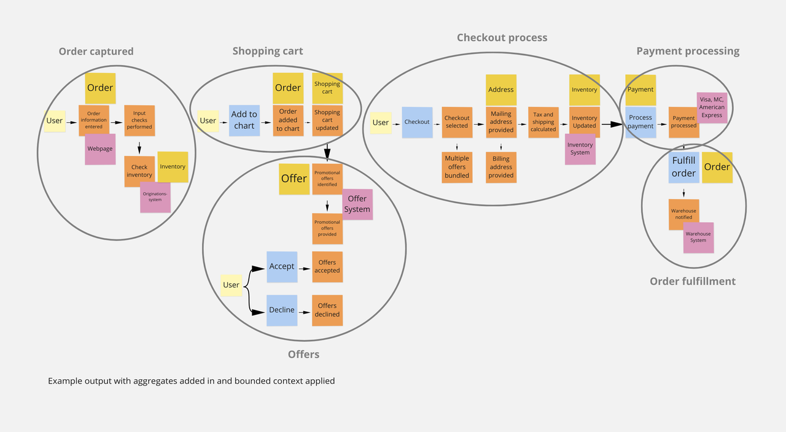

Domain driven design at Europython 2021
Today I participated of the training transcend the realms of development at europython 2021, and I'm quite happy with the result. Sometimes I'm hesitant of workshops because I don't manage to extract value, but I really did from this one, and the hosts were great. I've been questioning myself on how to make better representations of software, specially among multiple developers and stakeholders, how to share a common language?
Conclusions
Let's start by my final conclusions:
My models on how to design software collaboratively are outdated; mostly UML and random diagrams, not clear design process. There are new techniques used nowadays, so I will asses them I try to integrate into my tool-belt.
- Asses event storming. I would like to be trained into this technique.
- Asses C4 models and diagrams as code.
- For KPN, I already added diagrams as code and C4 support in mkdocs-kpn-theme
Notes
Next, you can find my notes, they may not be complete, I tried adding some images to make them more understandable.
Domain driven design
Normally architecture grows organically, but it can have unexpected consequences.
Domain driven design helps with:
- Identify domains -> core domains and secondary domains
- Quick feedback -> same language between stakeholders and developers
- Loosely coupled domains
Phases
- Ritual dissent
- Event storming
- Defining domains
- Building future of our project using C4 models
Ritual dissent
Small groups iterating over features, then one person from each group makes a pitch of 1 min to one of the other groups and gathers feedback.
It goes like this:
- Teammate goes to other group and pitches
- Once done, the pitcher just listens to the feedback and takes note, doesn't need to answer anything
- Goes back to the team and keeps refining
The owner of a problem often has fixed ideas about both the problem and possible solutions. Ritual dissent, developed by Dave Snowden of Cognitive Edge, allows a group of people to discuss a problem whilst its ‘owner’ turns around and listens to the discussion without intervening.
Event storming
EventStorming is a flexible workshop format for collaborative exploration of complex business domains.
I was quite pleased of the way it went with event storming, because it's simple, easy to pick up technique, while being quite expressive.
At the end of the day, event storming should help find bounded contexts.
Check eventstorming glossary cheat sheet for more documentation.
Defining domains
Once you are done with the event storm, you can start identifying your domains, take a look at the next digram from miro.

Taken from a miro board over event storming
These are the usual steps to finding the domains:
- Collect Domain Events - discover them
- Refine Domain Events - placing them in sequence
- Track causes - modelling out the broader ecosystem
- Re-sorting & result - categorize the events and build Bounded Contexts
Messages between systems
We didn't get to this step.
Building the future of a project
We didn't get to this step, either, but it's about using C4 diagrams. There was also a recommendation to use diagrams as a code, like plantUML, which has support for C4 diagrams.
In theory, C4 are zoom-in diagrams, with a very small surface of components to be learnt, different to other approaches like UML, which have a massive scope.
C4 has 4 levels of abstraction:
-
System Context diagram: allows you to step back and see the big picture

-
Container diagram: shows the high-level shape of the software architecture and how responsibilities are distributed across it. It also shows the major technology choices and how the containers communicate with one another.

-
Component diagram: decomposes each container further to identify the major structural building blocks and their interactions.
shows how a container is made up of a number of "components", what each of those components are, their responsibilities and the technology/implementation details.

- Code: it is usually recommended to generate this automatically from the code, or do it only when really necessary.